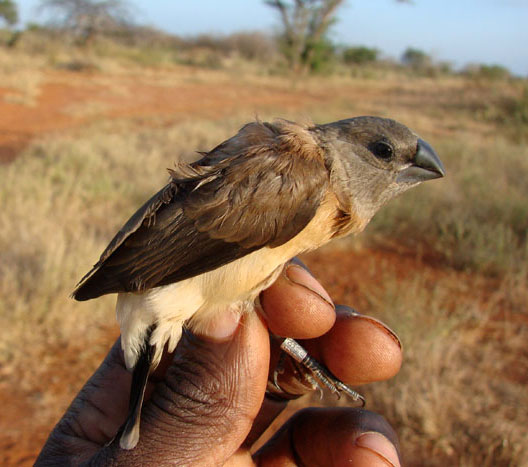
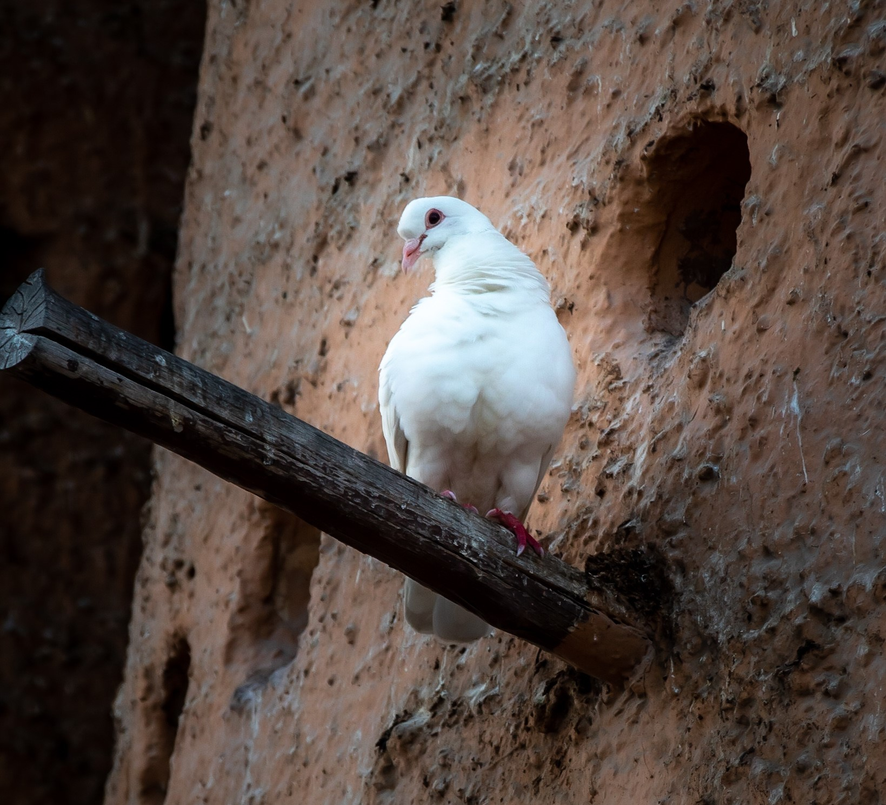
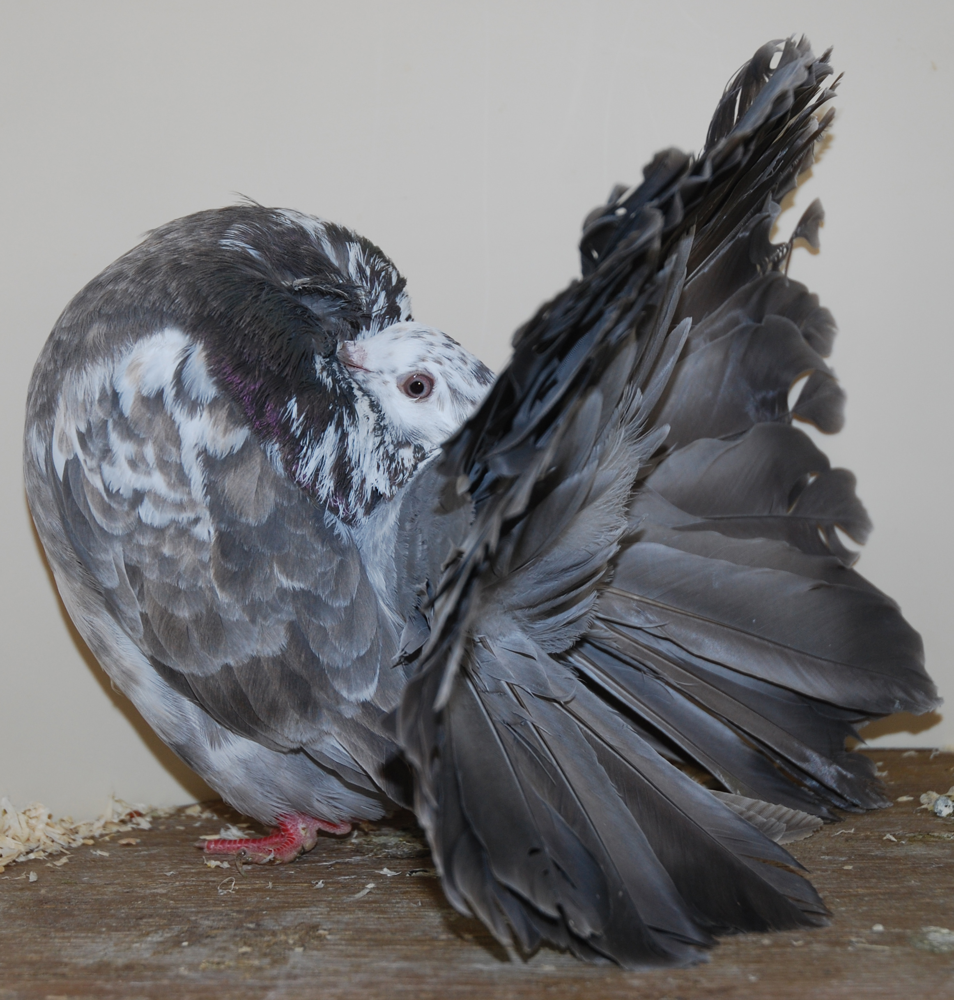
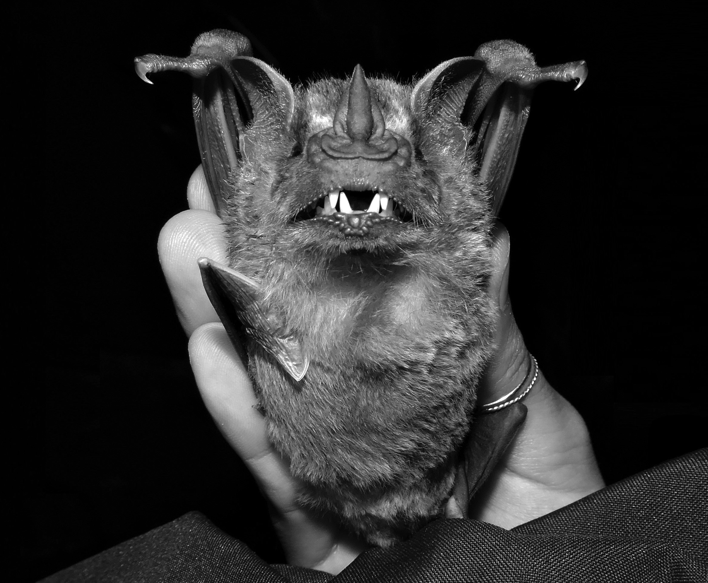
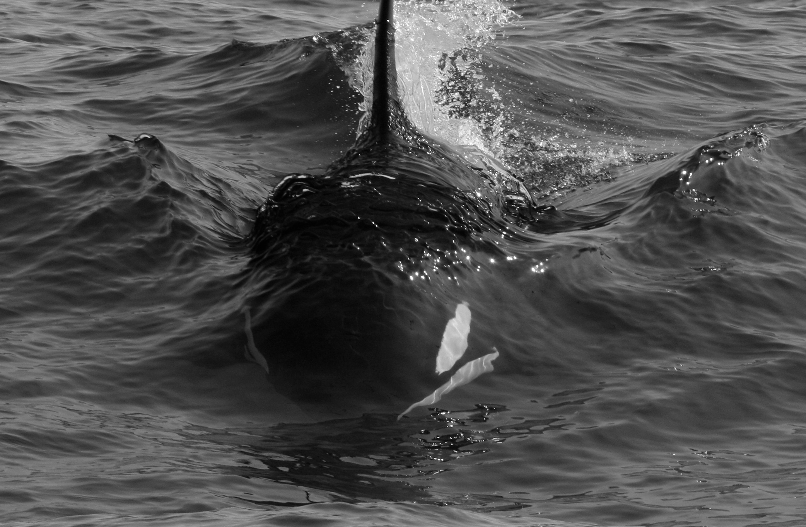

Research/
So far in my scientific carrer I have mainly worked on projects in the vein of Animal Evolutionary Genomics. To some of these I chiefly collaborated with wetlab work, while to others my contribution was on the drylab front, and yet to other projects I wore both the wetlab and the drylab hats (that was certainly the case for those projected I led). You will find below a selected list of the projects I have participated alongside with a short explaination on how I contributed to each of them. Please notice that the order used here is arbritary, and hence does not reflect the projects' importances.
10K Bird Project/
Ongoing (no longer with my contributions)
 Pretty much unwittingly, I started working on this long-running project back in 2013 during my MSc when I was hired as a lab assistant by my advisor Prof. Tom Gilbert, who was one of the leaders of the initial phase of this study. Later during my PhD also under Tom's supervision, my participation in this project was greatly expanded and I became the main person responsible for its weblab front in Copenhagen. Thus, my contribution here involved the coordination of samples (e.g. collection and shipping) alongside a considerable amount of lab work performing hundreds of DNA extractions. Moreover, I had the chance to participate in an expediction to the Kenyan Savanna on behalf of this project, so we could sample an important missing species. I also contributed to the late-stage drafting as well as approved its final version of the flagship article related to the Family Phase. I undoubtedly did learn a lot from my particiation in this large-scale genomic project, and although I no longer work on it, it is still rolling now in the genera phase. You can learn more about its current progress by visiting the project's webpage here. Pictured: Sampled bird from our expediction to Kenya in 2016.
Feral Pigeon Genomics/
Ongoing
 This was one of the main articles that composed my PhD thesis, thus I acted as the leader author of this study from its commencement until its end. I honestly considered that I learned a great deal by leading this project, especially on the front of sample acquisiton as we suceeded to amass more than 700 samples covering all continents through close collaboration with international researchers. Besides, this was the posject that really pushed me in my transition. We are now working on the final analyses for this study, and a preprint article will be made available soon. Thus, stay tuned. Pictured: Human-raised white pigeon inhabiting a modern columbarium in Doha, Qatar. Photo by Marie-Christine Rufener.
Pigeon Breeds Genomics/
Finished
 Pretty much unwittingly, I started working on this long-running project back in 2013 when my hired me as a reseach assistant during my MSc. Acting as the main responsible person for this large-scale genomic project in Copenhagen, I performed a massive amount of lab work for this study. Moreover, I also contributed to the drafting of this article and approved its final version. Pictured: Fancy pigeon individual belonging to Exhibition Fantail breed. Photo coutersy of Hein Van Grouw.
Vampire Bat Genomics/
Finished
 By the middle of my doctoral studies, I was invited to participate in this study which was part of the PhD thesis of Dr. Lisandra Zepeda. I performed crucial lab work for this project, such as DNA extractions and molecular quality checks, as well as PCR experiments which sought to confirm some of the presented results. Naturally, I also contributed to the article writing process and helped Dr. Zepeda to finish up its final draft version based on inputs from all other collaborators. The article resulting from this interesting study can be found here. Pictured: Bat individual held by a human hand. Photo coutersy of Vitória F. Nunes.
Killer Whale Genomics/
Finished
 I performed crucial lab work for this project, such as sample acquisition, DNA extractions and molecular quality checks. I also received the leading author of this project (Dr. Andrew Foote) at our labs in Copenhagen and introduced him to some of the modern techniques that were used in this study. I also contributed to the article writing process and approved its final version together with all other authors. Pictured: Swimming killer whale. Photo coutersy of Andy Foote.